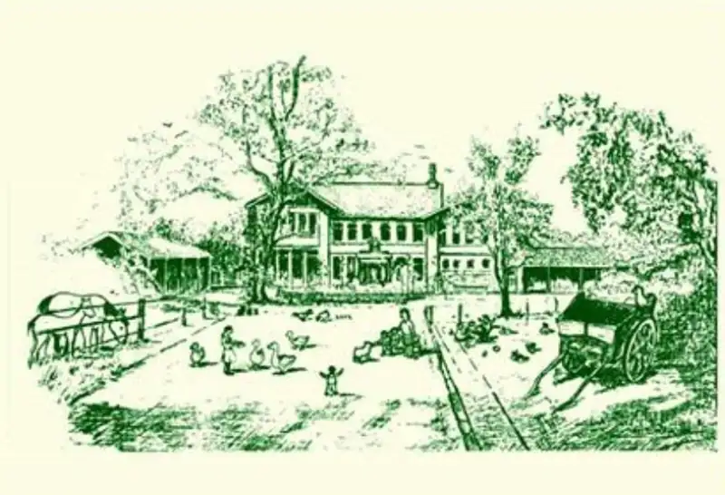

Our story
Mrs Wilkie opened the nursery in August 1991, on her family farm. Her daughter Kimberley now helps run it.
Our motto: Be happy. Create friendships. Love nature. Stay safe.
Proud of
- National Lifetime Achievement Award for Mrs WilkieScottish Nursery Awards, November 2025
- Bronze, Early Years Team of the YearPearson National Teaching Awards, 2025
- Pocket garden made from an old bathKeep Scotland Beautiful Pocket Garden competition, 2026
- Eco-Schools, and a Sun Safe Nursery
